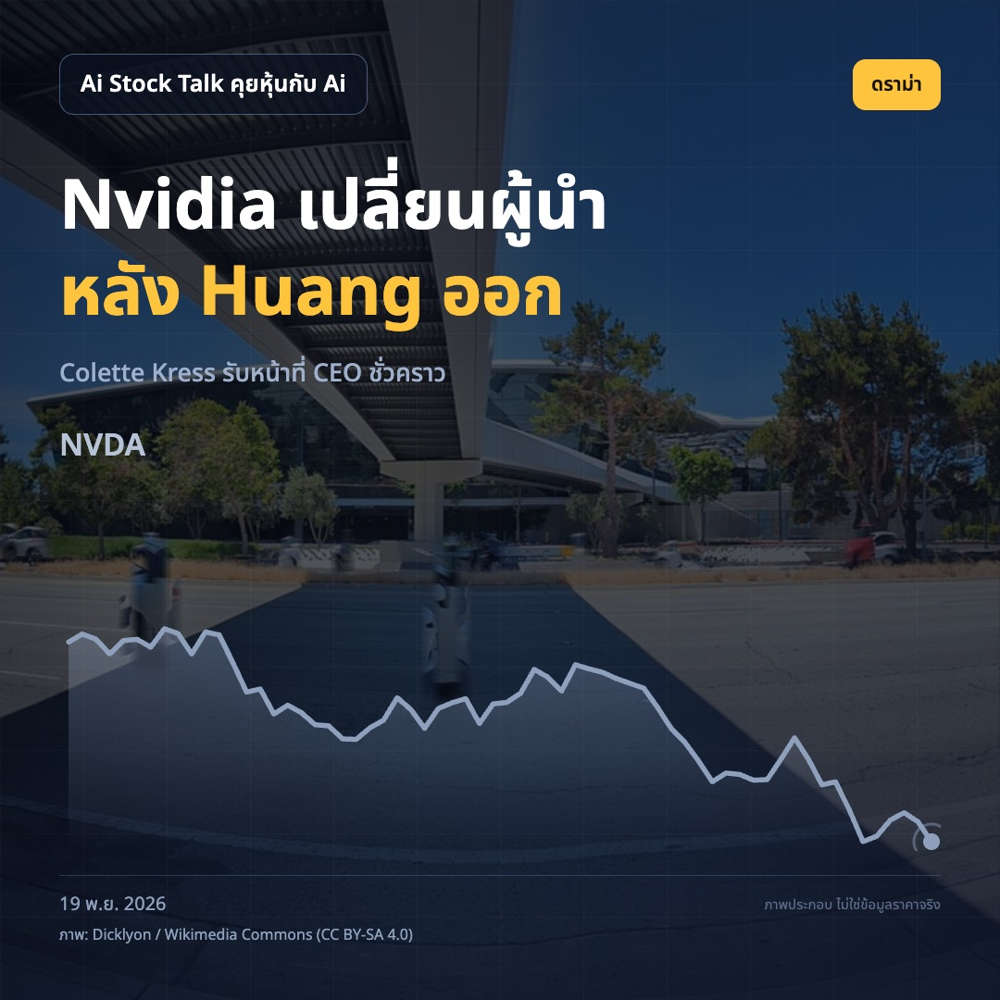
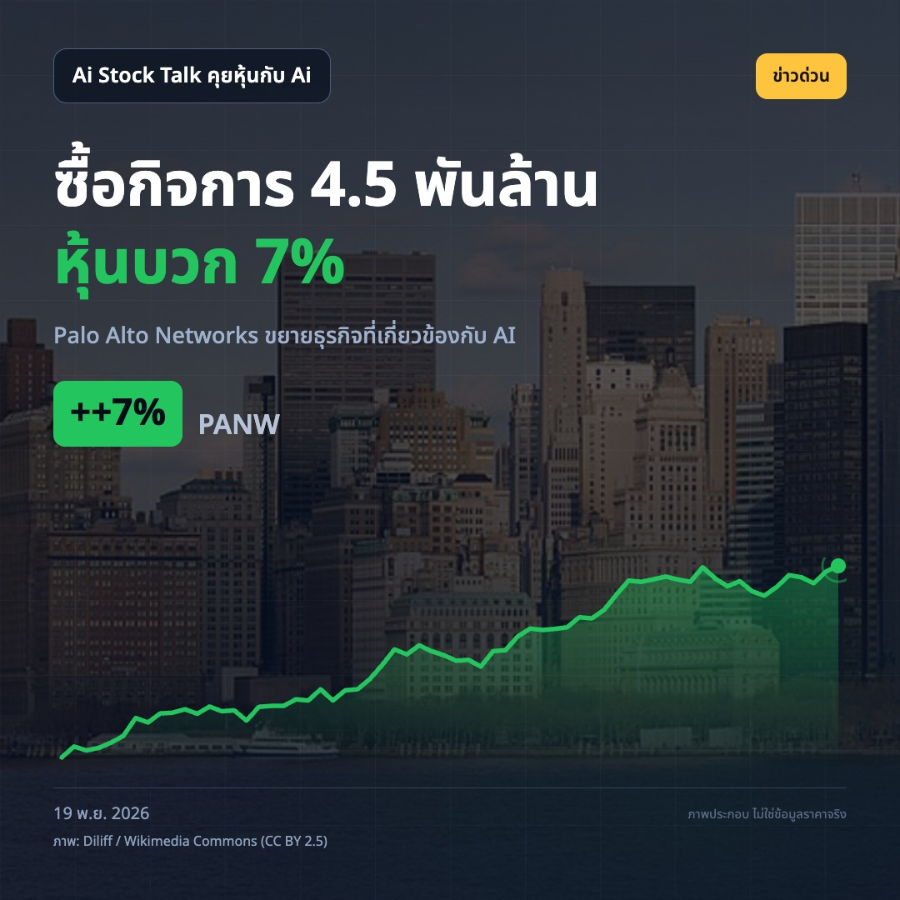
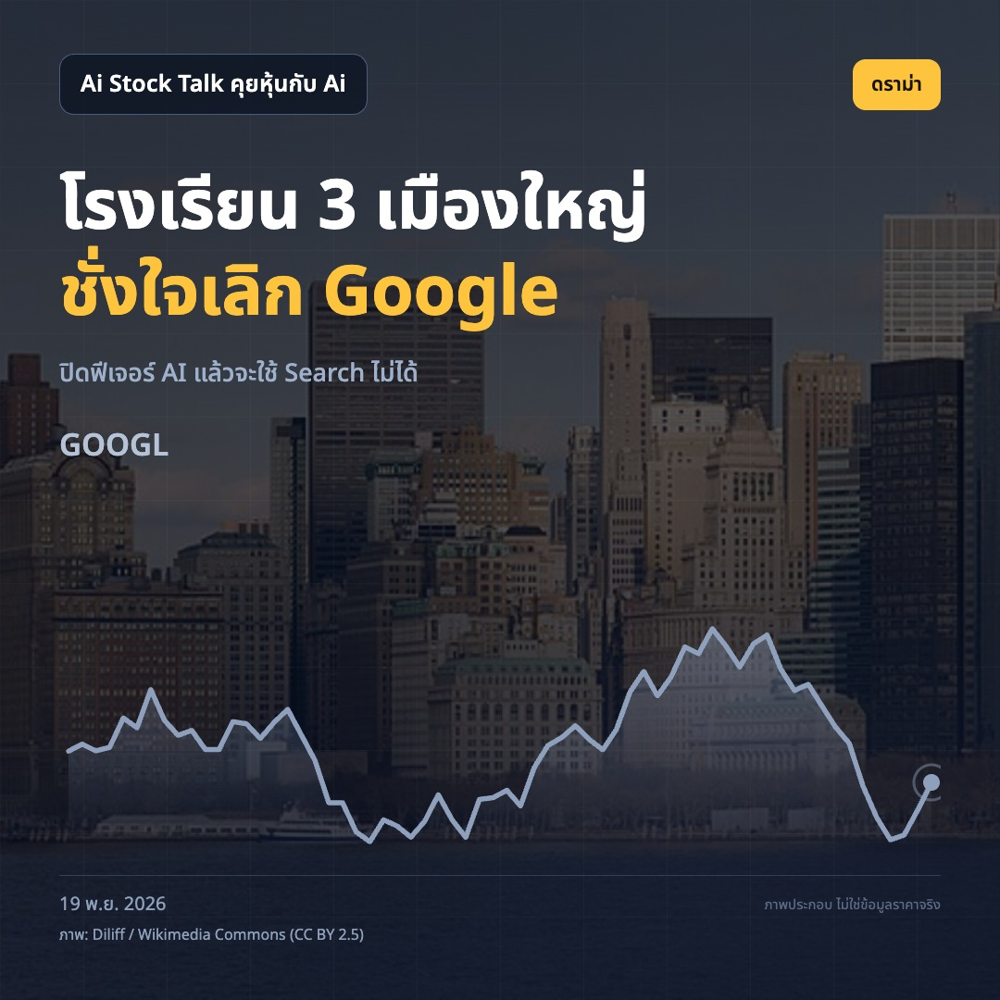

1. Anthropic เตรียมเข้าตลาด มูลค่ากิจการ 1.5 ล้านล้านดอลลาร์

Anthropic เตรียมเข้าตลาด ด้วยมูลค่า 1.5 ล้านล้านดอลลาร์
หุ้น Anthropic เตรียมเริ่มซื้อขายใน Nasdaq คืนนี้ตามเวลาไทย ภายใต้ตัวย่อ ANT โดยกำหนดราคาเสนอขายที่ 83 ดอลลาร์ต่อหุ้น สูงกว่ากรอบราคาเดิม 70–78 ดอลลาร์
การเสนอขายระดมทุนได้มากกว่า 81,000 ล้านดอลลาร์ ซึ่ง CNBC ระบุว่าเป็นการเสนอขายครั้งใหญ่ที่สุดเป็นประวัติการณ์
ทำไมต้องสน: นักลงทุนไทยที่ถือหุ้น AI จะมีหุ้นบริษัทผู้พัฒนาโมเดล AI ให้ติดตามโดยตรงเพิ่มอีกตัว ขนาดของดีลยังทำให้ตลาดจับตาว่าเงินลงทุนจะไหลไปที่หุ้น AI รายใด
ถ้าติดตามหุ้น AI อยู่ คุณจะดูอะไรเป็นอย่างแรกเมื่อ ANT เริ่มซื้อขาย?
ที่มา: https://www.blognone.com/node/152203 https://www.cnbc.com/2026/11/18/anthropic-ipo-ai-offering-price.html
Anthropic #หุ้นAI #ตลาดหุ้นสหรัฐ
ภาพ: ESO/P. Horálek / Wikimedia Commons (CC BY 4.0)
2. Nvidia เปลี่ยนผู้นำ หลัง Jensen Huang ออก

Nvidia มี CEO ชั่วคราว 1 คน หลัง Jensen Huang ออก
Colette Kress รับหน้าที่ซีอีโอชั่วคราวของ Nvidia และพูดกับพนักงานในการประชุมรวมครั้งแรกหลังการออกจากตำแหน่งของ Huang พร้อมเสนอการขึ้นค่าจ้าง
Satya Nadella ซีอีโอ Microsoft ระบุว่ายังเชื่อมั่นใน Kress ขณะที่ Elon Musk แสดงความกังวลต่อการเสีย Huang ไป
ทำไมต้องสน: Nvidia เป็นหุ้นที่นักลงทุนไทยใช้ติดตามธุรกิจชิป AI การเปลี่ยนผู้นำจึงทำให้ต้องจับตาว่าบริษัทจะเดินหน้าต่อภายใต้ Kress อย่างไร ความเห็นจากลูกค้าอย่าง Microsoft เป็นอีกสัญญาณที่ตลาดอาจนำมาพิจารณา
สำหรับคุณ สิ่งแรกที่อยากเห็นจากผู้นำชั่วคราวของ Nvidia คืออะไร?
ที่มา: https://www.cnbc.com/2026/11/18/nvidia-interim-ceo-kress-addresses-staff-after-jensen-huang-exit-.html https://techcrunch.com/2026/11/18/microsoft-ceo-satya-nadella-remains-confident-in-nvidia-after-huangs-exit/
Nvidia #หุ้นชิป #หุ้นAI
ภาพ: Dicklyon / Wikimedia Commons (CC BY-SA 4.0)
3. Intel ได้ลูกค้าภายนอกรายแรกสำหรับชิป 18A

Intel ได้ลูกค้าภายนอกรายแรกสำหรับชิป 18A
Lip-Bu Tan ซีอีโอ Intel ระบุว่าบริษัทลงนามกับลูกค้าภายนอกรายแรกสำหรับชิป 18A แล้ว ข่าวนี้เป็นความคืบหน้าของธุรกิจรับผลิตชิปที่นักลงทุนติดตามอยู่
ข้อมูลในข่าวยังไม่ได้ระบุชื่อลูกค้าหรือรายละเอียดคำสั่งซื้อ จึงยังประเมินขนาดรายได้จากสัญญานี้ไม่ได้
ทำไมต้องสน: สำหรับคนไทยที่ถือหุ้นชิปหรือกองทุนเทคสหรัฐ การมีลูกค้าภายนอกจริงเป็นข้อมูลที่ใช้ติดตามโอกาสของ Intel ในธุรกิจผลิตชิป ขั้นต่อไปที่สำคัญคือรายละเอียดของงานผลิตและคำสั่งซื้อ
คุณอยากเห็นข้อมูลใดก่อนตัดสินว่าดีล 18A นี้มีน้ำหนักต่อหุ้น Intel?
ที่มา: https://www.cnbc.com/2026/11/18/intel-first-18a-foundry-customer.html
Intel #ชิป18A #หุ้นชิป
ภาพ: Dicklyon / Wikimedia Commons (CC BY-SA 4.0)
4. Palo Alto Networks ซื้อกิจการ AI มูลค่า 4.5 พันล้านดอลลาร์ หุ้นบวก 7%

Palo Alto Networks ซื้อดีล 4.5 พันล้าน หุ้นบวก 7%
Palo Alto Networks ตกลงซื้อ Applied Compute ซึ่งเป็นสตาร์ตอัป AI ด้วยมูลค่า 4.5 พันล้านดอลลาร์ และหุ้นบริษัทปรับขึ้น 7% หลังรายงานผลประกอบการ
บริษัทเดินหน้าซื้อกิจการเพื่อรับความต้องการเครื่องมือความปลอดภัยไซเบอร์ที่เกี่ยวข้องกับ AI พร้อมปรับเพิ่มแนวโน้มผลประกอบการ
ทำไมต้องสน: นักลงทุนไทยที่ถือหุ้นเทคสหรัฐอาจต้องมองการใช้ AI อีกด้านหนึ่ง คือความต้องการป้องกันภัยไซเบอร์ ข่าวนี้มีทั้งดีลซื้อกิจการและการตอบรับของหุ้น แต่ยังต้องติดตามว่าบริษัทจะได้ผลจากดีลนี้เพียงใด
คุณมองว่าธุรกิจความปลอดภัยไซเบอร์จะได้ประโยชน์จาก AI มากขึ้นไหม?
ที่มา: https://www.cnbc.com/2026/11/18/palo-alto-networks-panw-q1-2027-earnings-.html https://www.marketwatch.com/story/palo-alto-networks-stock-soars-as-earnings-show-ai-has-upped-the-stakes-for-cybersecurity-308e34b8?mod=mw_rss_topstories
PaloAltoNetworks #ความปลอดภัยไซเบอร์ #หุ้นAI
ภาพ: Diliff / Wikimedia Commons (CC BY 2.5)
5. Microsoft เสนอให้พนักงาน 60,000 คนสมัครใจลาออก

Microsoft เสนอทางออกให้พนักงาน 60,000 คน
Satya Nadella ซีอีโอ Microsoft อธิบายเหตุผลที่บริษัทเสนอเงินชดเชยเพื่อให้พนักงาน 60,000 คนเลือกลาออกโดยสมัครใจเมื่อเดือนตุลาคม แทนการลดพนักงานครั้งใหญ่อีกครั้ง
รายงานระบุว่า AI เป็นส่วนหนึ่งของเหตุผล แต่รายละเอียดในข้อมูลที่ให้มายังไม่พอจะสรุปว่าตำแหน่งงานใดได้รับผลกระทบบ้าง
ทำไมต้องสน: สำหรับนักลงทุนไทยที่ถือหุ้น Microsoft ข่าวนี้ทำให้ต้องติดตามว่าบริษัทจะปรับกำลังคนและการใช้ AI อย่างไร รวมถึงผลที่อาจปรากฏในต้นทุนและการดำเนินงานระยะต่อไป
คุณคิดว่าข้อมูลใดจะช่วยบอกได้ว่าการปรับครั้งนี้ส่งผลดีต่อธุรกิจจริง?
ที่มา: https://techcrunch.com/2026/11/18/microsoft-ceo-satya-nadella-explains-why-he-asked-60k-employees-to-quit/
Microsoft #งานกับAI #หุ้นเทค
ภาพ: Ofrashay / Wikimedia Commons (CC BY-SA 4.0)
6. โรงเรียนใน 3 เมืองใหญ่สหรัฐฯ พิจารณาเลิกใช้ Google Search

โรงเรียน 3 เมืองใหญ่ชั่งใจเลิก Google Search เพราะ AI
เขตการศึกษาในนิวยอร์ก ลอสแอนเจลิส และชิคาโก กำลังพิจารณาทางเลือกอื่นแทน Google หลังบริษัทระบุว่าโรงเรียนที่ปิดฟีเจอร์ AI จะใช้ Search ไม่ได้ด้วย
ตั้งแต่ปีหน้า โรงเรียนจะไม่สามารถปิดฟีเจอร์ที่ขับเคลื่อนด้วย Gemini โดยยังเปิด Search ไว้ตามเดิมได้
ทำไมต้องสน: นักลงทุนไทยที่ถือหุ้น Google ควรติดตามว่าการผูก Search เข้ากับ AI จะส่งผลต่อการใช้บริการในโรงเรียนอย่างไร ตอนนี้เป็นขั้นพิจารณาทางเลือก ยังไม่มีข้อมูลว่าเขตการศึกษาเหล่านี้ตัดสินใจเลิกใช้แล้ว
ถ้าเป็นโรงเรียนของคุณ ควรมีสิทธิ์เลือกปิด AI แต่ใช้ Search ต่อได้ไหม?
ที่มา: https://www.theverge.com/ai-artificial-intelligence/1037151/school-districts-ditching-google
Google #Gemini #หุ้นเทค
ภาพ: Diliff / Wikimedia Commons (CC BY 2.5)